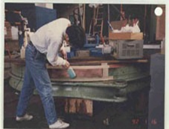
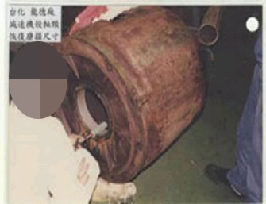
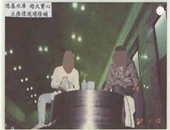
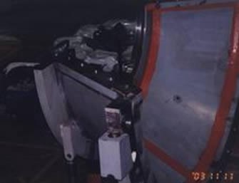
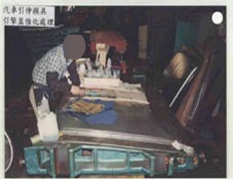
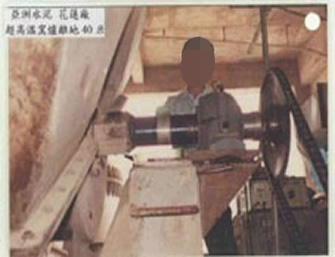
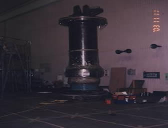
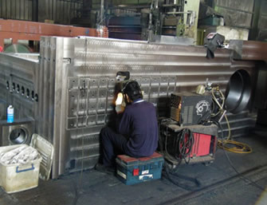
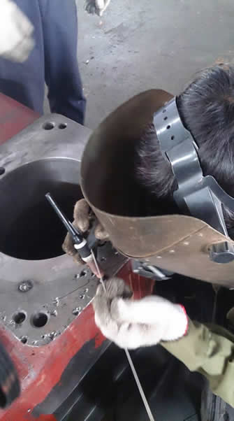
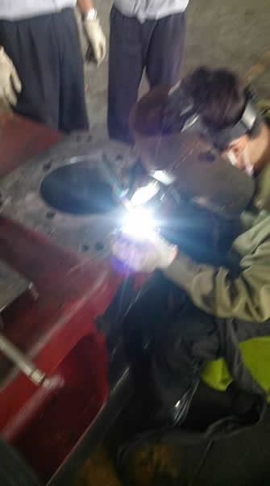

抄紙機烘缸鑄造砂孔現場修補091104


合眾紙業5號機抄紙烘缸凹陷090822


輪胎製造設備壓料設備 勘驗損傷情況


損傷處之一 使用現場冷補堆焊機(MTD)進行搶修1


使用現場冷補堆焊機(MTD)進行搶修2 堆焊完成狀況(尚未細部處理)


進行初步修整狀況 經過細部處理後之狀況


S3600009貼金機軸心現場焊補及研磨 Heidelberg八色輪轉機印版滾筒枕椽母材剝落現場修補


海德堡六色機上光座滾筒壓傷修補 海德堡六色機上光座水轆現場修補


SANY0111(海德堡四色現場拆螺絲) 小森四色機版筒軸承導板磨損現場焊補


印刷機版筒軸承導板磨損現場修補 打樣試印機壓板角落時常以手抓紙造成凹陷修補


壓筒壓傷刷鍍現場修補情形 橡筒刷鍍後採海棉平面研磨機前處理


壓筒壓傷修補前(有補土) 壓筒壓傷修補研磨後


30噸怪手樑裂現場焊補 噴砂機軌道現場焊補


台電水力發電機之止推外環局部刷鍍金屬再生及耐蝕處理 減速機殼軸頸磨損之刷鍍金屬再生


台電水力發電機之實心止推軸環之修補 台電水力發電廠大型軸瓦接合銹蝕現場刷鍍修補及研磨


汽車引伸模大面積凹陷採用刷鍍金屬再生修補 水泥廠高溫窯爐之軸承座磨損在40米高處現場修補


台電水力發機主軸沖蝕及咬蝕表面陶瓷複合材料強化及修補處理 大型鑄件現場低溫弧焊修補


膠布機輪壓傷現場修補 大型鑄件車壁砂孔低溫弧焊機現場修補


印鐵廠印鐵機車壁軸承座現場刷鍍金屬再生修復 真空爐體管路洩漏現場焊補


統一馬口鐵印鐵機車壁軸承孔冷焊修補 科技廠壓延輥表面鍍鉻壓傷冷焊現場修補並手工研磨

大型鑄件車壁砂孔嚴重採氬焊及冷焊現場修補